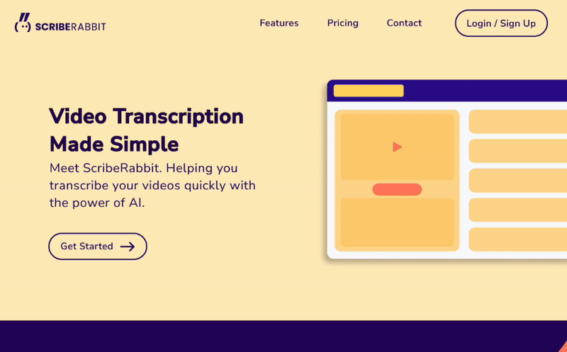
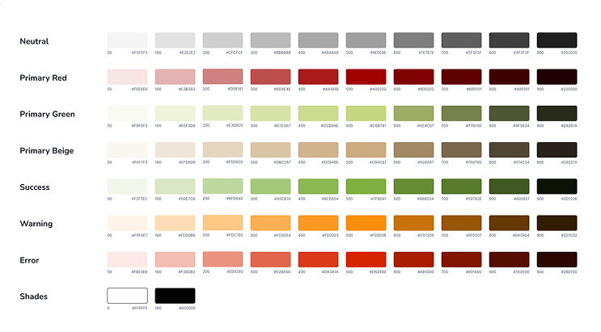

Sentient.io
I supported multiple internal teams at Sentient.io to design early-stage product experiences, improve usability, and lay foundational design system patterns across their AI-driven platforms.
Highlights & outcomes
The challenge
Sentient.io’s internal products were powerful but inconsistent. Visual design varied across tools, interaction models lacked cohesion, and early user feedback showed friction in workflows like transcription setup, pricing review, and profile management.
The team needed a clearer design language, more intuitive flows, and landing pages that communicated product value effectively.
My role & responsibilities
I contributed across product, design, and frontend support:
- Designed core user flows (onboarding, pricing, profile management) for the ScribeRabbit platform.
- Created marketing-ready landing pages to communicate value and drive early adoption.
- Built responsive implementations together with engineers, adjusting components and CSS directly where needed.
- Introduced early design system foundations, including typography, color tokens, and reusable UI elements.
- Supported beta testing refinement, helping transform raw feedback into actionable user stories.
ScribeRabbit: AI transcription
As ScribeRabbit was still in beta testing, I was able to come in with fresh ideas and concepts for ScribeRabbit. I thus designed a bold, new design for the landing page, as well as some of the key user flows for the web service.
Landing page

Warm complementary palette
Distinctive yet aligned with the brand’s bold visuals.
Structured hierarchy
Hero → Features → Pricing → Contact for better scanning.
Action-oriented CTAs
Consistent placements increased conversion clarity.
Illustration-supported storytelling
Enhanced comprehension and emotional engagement.
User profile

Sentient.io’s new design system
I created Sentient.io’s first lightweight design system to unify key UI elements across teams. This included color tokens, typography scales, buttons, and foundational components.
Colours

Tags

Typography